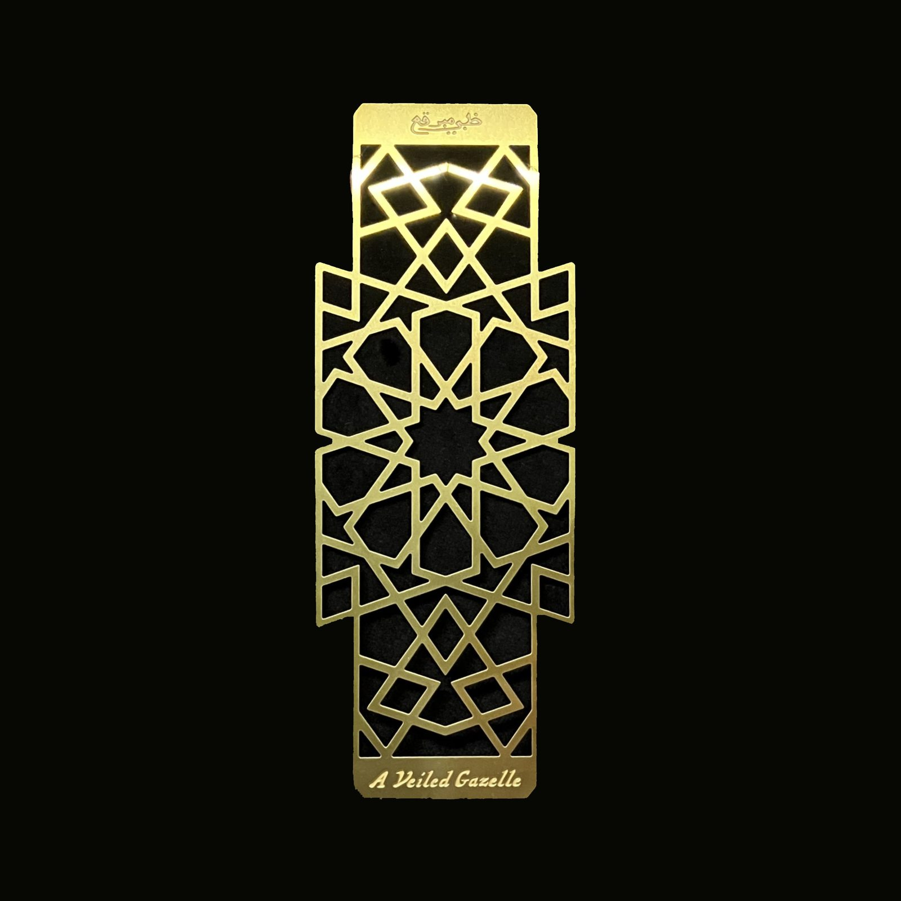
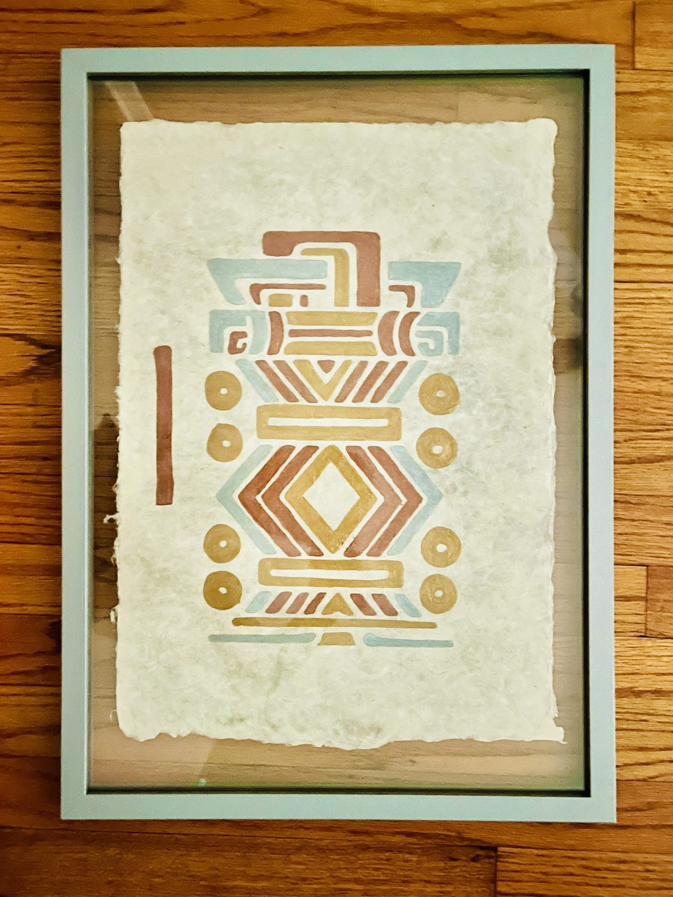
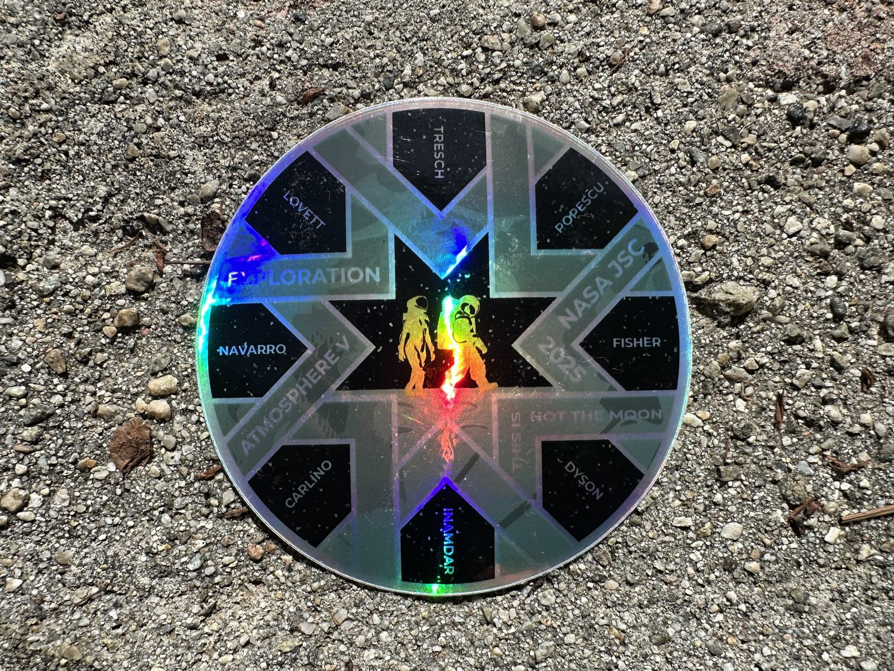
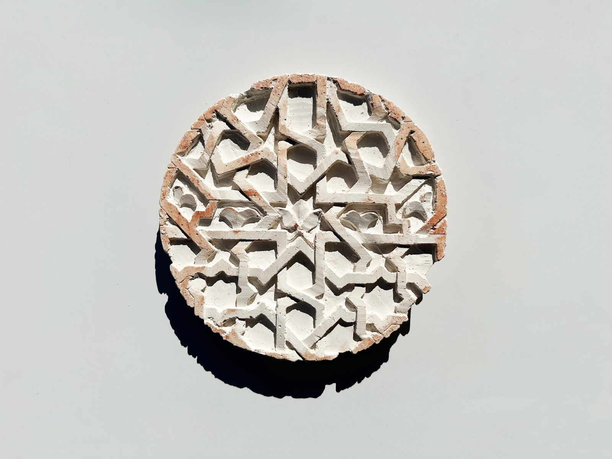
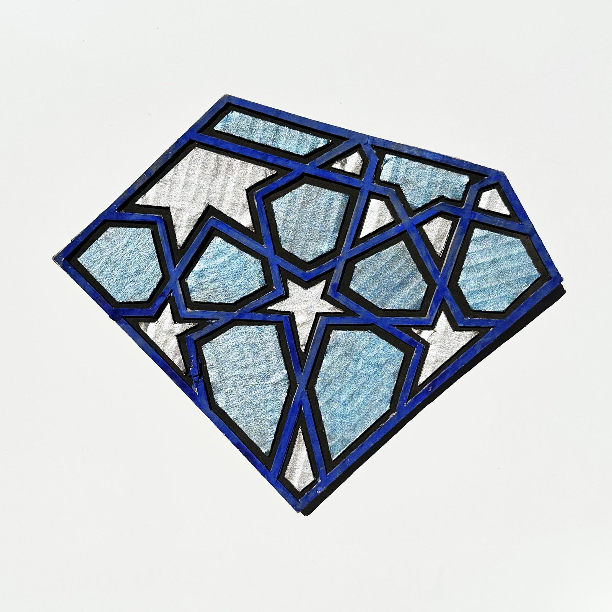
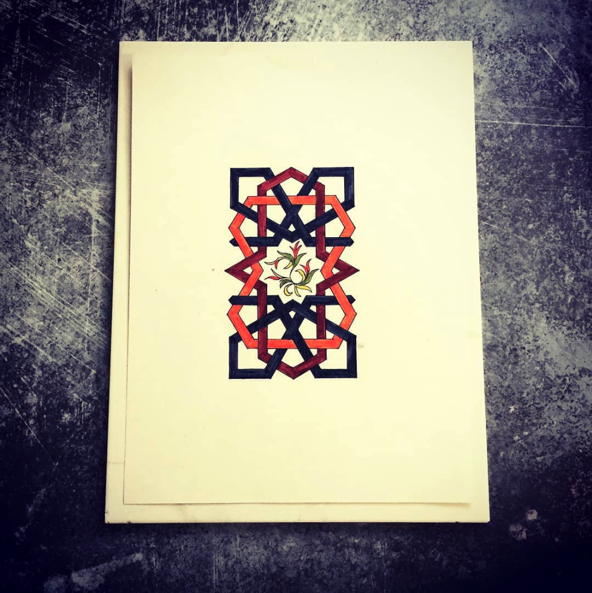
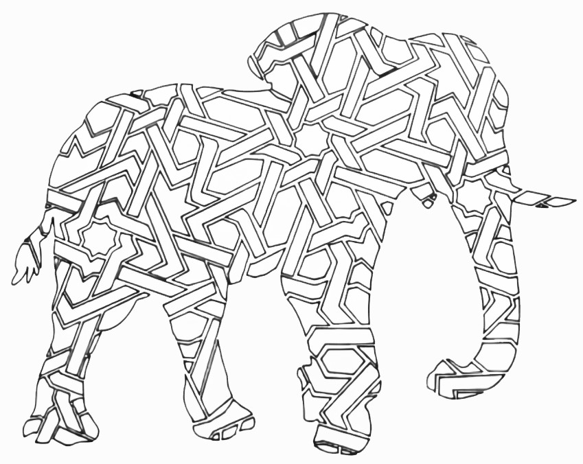
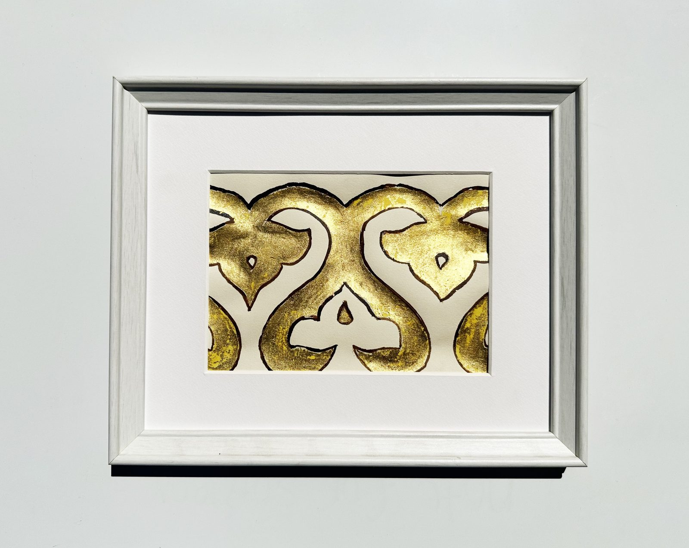
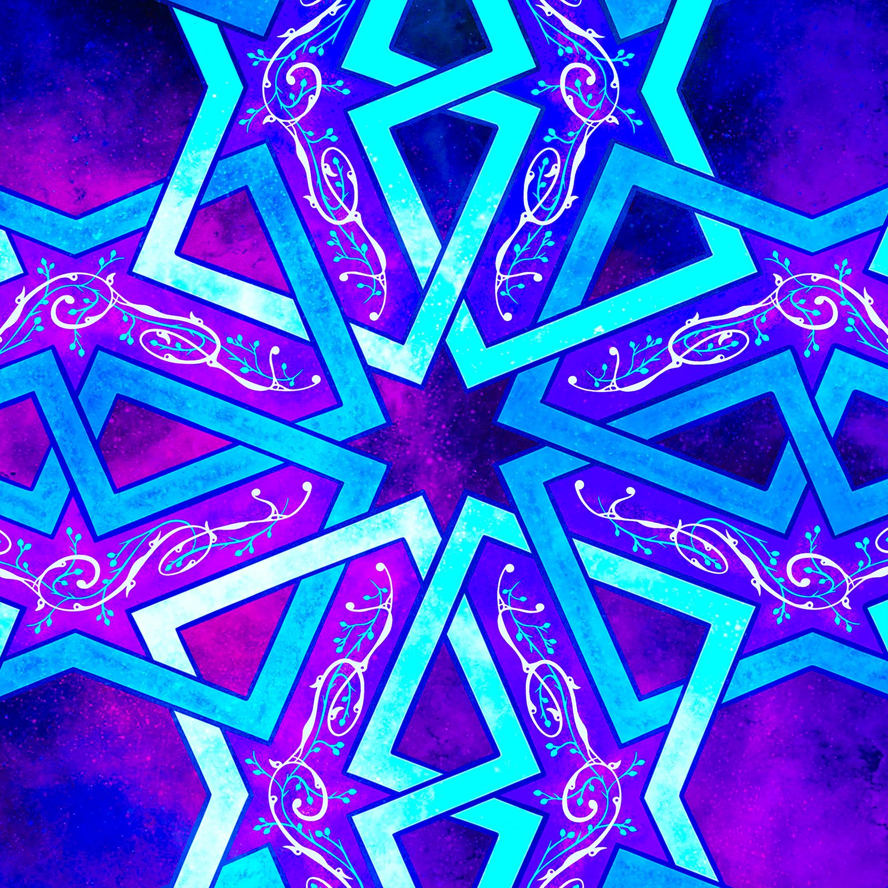
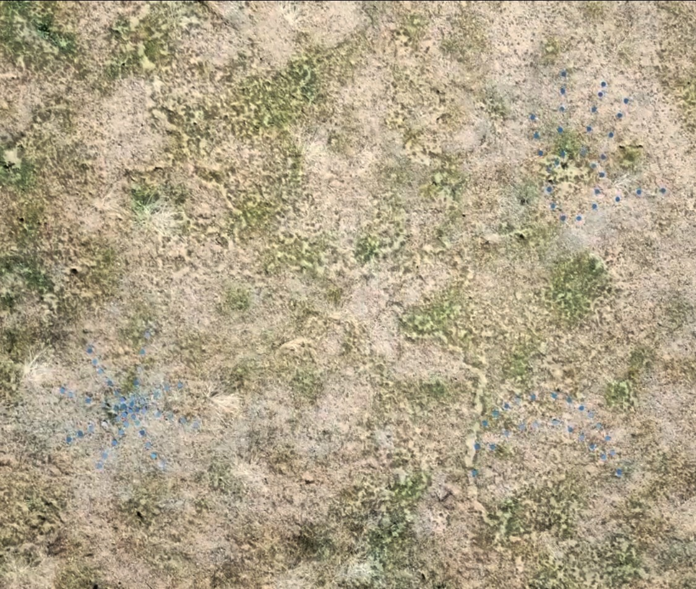

A collection of original works exploring the synthesis of artistic traditions — across geometric (Islamic pattern), traditional, sculptural, hand-drawn, mixed-media and digital practices drawn from many cultures — and the synthesis between traditional craft and contemporary ideas in science, astronomy and cosmology. The pieces span hand-drawn studies on paper, digital compositions, sculpted clay, laser-etched metal, and a landscape-scale geoglyph; collaborations with institutions including the Museum of Jurassic Technology, NASA, and the Getty’s PST ART initiative are noted where relevant.
A Veiled Gazelle Bookmark
Commissioned by the Museum of Jurassic Technology for their 2024 Getty PST exhibition A Veiled Gazelle, on the philosophy of Ibn al-‘Arabi. The pattern is reconstructed by hand from a 500-year-old Ottoman geometric design originally adorning a Quran box from the Selim II era, then chemically and laser-etched into metal with calligraphy engraved by an expert calligrapher. The reflective metallic surface distributes light across the interlocking star-and-polygon forms, and the piece became the no. 1 top-selling item in the museum’s gift shop following a six-month institutional collaboration.

2024 · Brass and stainless steel, laser-etched ten-fold Ottoman geometric pattern with Arabic calligraphy · 6 × 2½ in (15.2 × 6.4 cm)
tele-present wind
A collaboration with artist David Bowen. The artwork is by David Bowen — a kinetic installation in which 126 grass stalks, each on a tilting servo mechanism, sway in response to wind data transmitted from Mars by NASA’s Perseverance rover via the MEDA instrument. My contribution was the scientific data: preparing the raw MEDA atmospheric measurements, validating their accuracy, and reformatting them for direct infusion into Bowen’s mechanisms — with MEDA Principal Investigator José Antonio Rodríguez-Manfredi providing the underlying science. I also co-organized the “Blended Worlds” exhibition. Featured in The New York Times, PBS NewsHour, and Forbes as part of the Getty’s PST ART initiative at the Brand Library & Art Center, Glendale.
This painting recreates a hieroglyphic motif observed during a visit to the Venus Platform at Chichen Itza, dedicated to Kukulkán, the Maya feathered serpent deity identified with Venus. The vertical bar (numeral five), eight circular dots (number eight), and bundled-reeds symbols (an Earth calendar year) together encode the astronomical equivalence that five synodic Venus cycles equals exactly eight solar years — a calculation the Maya made accurate to within hours over centuries. Iridescent metallic paints on handmade Samarkand silk paper emphasize the cosmic palette and connect two civilizations with deep astronomical and mathematical traditions.

2025 · Iridescent metallic paints on handmade silk paper from Samarkand, Uzbekistan · 16 × 11 in (40.6 × 27.9 cm)
NASA Atmosphere V Analog Mission Patch
Commissioned as the official mission patch for the NASA Atmosphere V Analog crew — eight analog astronauts conducting the Exploration Atmosphere Pre-breathe Protocol Study at NASA’s Johnson Space Center. The design is built on a 13th-century Seljuk eight-fold geometric construction in which the number of sections matches the number of crew members, placing a 700-year-old tradition and NASA’s contemporary lunar research program within a single design.

2025 · Digital vector design (geometric illustration), circular patch for official mission use · ~4 in (10.2 cm) diameter
The Artifact
A circular clay disc in which two distinct eight-fold geometric traditions are deliberately synthesized: the Seljuk star-and-kite tessellation of 12th–13th-century Anatolia (top half), and the more nuanced shapes of Persian Ilkhanid practice (bottom half). A hand-carved islimi biomorphic relief sits at the place of intersection, and red ochre settles into the carved corners to evoke ancient pigment, suggesting an excavated object.

2022 · Handmade clay, hand-carved relief, red ochre powder surface treatment · 9 in diameter × 2 in depth (22.9 × 5.1 cm)
Antipattern
Two simultaneous departures from Islamic geometric convention: the tessellation is presented within an irregular boundary that denies the pattern its full symmetry, and the material itself is layered cardboard salvaged from discarded boxes, colored with diluted leftover paint. Together, the anti-symmetry and the upcycled medium ask which elements of the tradition can be experimented with while still keeping its essence intact.

2021 · Upcycled layered cardboard from discarded boxes, diluted leftover paints, cobalt blue and black outlines · 10 × 8½ in (25.4 × 21.6 cm)
Interwoven
A reinterpretation of a pattern from the Mamluk tradition of Quran binding, in which interlocking star tessellations were tooled into leather covers for sacred texts. Deep navy carries the primary geometric framework, with red-orange in the secondary cells and green-yellow in the floral elements; rendered on paper, the work appears to float against a clean white ground.

2018 · Colored pencil on paper · 8½ × 11 in (21.6 × 27.9 cm)
Elephant
Two visual systems that rarely occupy the same space are merged: an animal silhouette serves as the boundary of an eight-fold Islamic geometric tessellation that fills the interior completely and is cut off precisely at the shape’s edge. The same geometric techniques typically used for abstract forms here give rise to a living creature — the work asks whether the geometry fills the elephant or constructs it.

2023 · Print of hand-drawn artwork, ink on paper · 12 × 12 in (30.5 × 30.5 cm)
Au
Named for gold’s scientific symbol, this piece uses natural metal — gold foil — as painting material. The iridescent surface, shifting from bright reflective gold to warmer tones as light moves across it, is the work’s central subject.

2018 · Gold foil on paper, natural paste adhesive, black ink · 7 × 5 in (17.8 × 12.7 cm)
Cosmic
A hand-drawn then digitized geometric composition rooted in the 15th-century Timurid tilework of the Registan complex, Samarkand, with added islimi biomorphs. The palette shifts from classic Registan ceramic blues toward deep magentas, purples, and electric cyan; tree-like biomorph branches extending through the structured geometric lines suggest the seeded propagation of life through space as a function of the universe itself.

2022 · Hand-drawn Islamic geometric design, digital coloring with nebula-inspired palette · Digital, dimensions variable
Interconnectedness
Based on the tilework of the Al-Nasir Muhammad Mosque, Cairo — a Mamluk monument approximately 700 years old — rendered as a dense, multi-layered tessellation in yellow-gold and white lines on a black ground. Inverting the conventional treatment of light in Islamic geometric pattern, the geometry appears to emit rather than reflect; every line weaves through every other, and all begin and end at a single point of origin. The work proposes that the inextricable connections between all things, made visible, would look something like this.
Two distinct Islamic visual traditions held in a single composition: the floral inlay of Mughal parchin kari (the technique of inlaying precious stones into marble) and the geometric pattern known as the Breath of the Compassionate (Nafas al-Rahman). Four units of radiating Mughal flowers, each contained within an eight-pointed star frame, are linked by the angular connectors of Nafas al-Rahman; biomorphic and geometric forms are unified in monochrome to highlight the line work.
In July 1054 CE a supernova exploded in full daylight for nearly a month. The ancestral Puebloans at Chaco Canyon recorded it on a sandstone cave ceiling in red ochre — a handprint, a crescent moon, and a radiating starburst that marked both the astronomical event and the human act of witnessing. Today that object is the Crab Nebula, still expanding at 1,500 km/s. Reflecting the Supernova recreates these three symbols at landscape scale using circular mirrors and lights on desert ground, photographed by drone — each mirror catches light from the sky, including light from the Crab Nebula itself, and reflects it back upward in an act of cosmic reciprocity. Constructed at a Joshua Tree, California desert site with the help of friends and colleagues, the piece served as the backdrop for an astronomical viewing of the Crab Nebula that night.

2025 · Circular mirrors and lights on desert ground, drone equipment · Landscape scale
Ice over Fire
Original digital piece based on a satellite image of Japan’s Mount Fujisan. The title contrasts the mountain’s frozen surface with its deep underground volcanic activity. Winning entry, Indiana University Earth as Art competition, 2008.